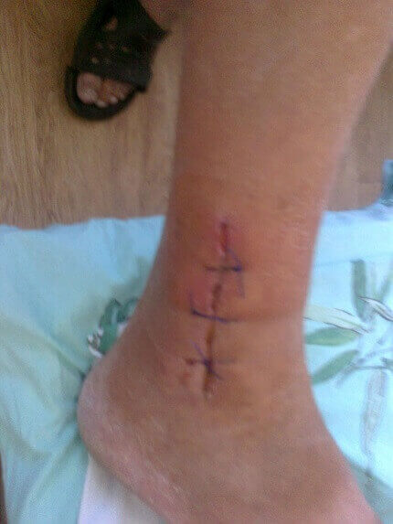

Bagaimana untuk menyembuhkan sakit sendi
Saya ingin memberitahu anda kisah saya tentang bagaimana saya berjaya melawan artrosis sendi lutut saya dan osteokondrosis pada bahagian kecil belakang saya. Saya bukan seorang doktor, jadi saya tidak akan terangkan bagaimana saya menyembuhkannya, saya hanya akan memberitahu anda apa yang berlaku.
Saya berusia 62 tahun, saya seorang pesara. Sebelum persaraan, saya bekerja di sebuah kedai letupan relau di kilang logam. Pada mulanya saya seorang pekerja biasa di sana, dan kemudian saya naik pangkat menjadi seorang jurutera keselamatan. Mereka yang tahu profesion seorang pekerja relau akan faham bahawa ia tidak banyak berbeza daripada pekerja kilang keluli. Mereka hanya mendidih keluli di dalam penukar, dan apa yang mereka perlu lakukan ialah duduk dan menekan tuil dan butang. Kami melakukan segala-galanya dengan cara lama. Jika perlu, kami menggunakan penyodok dan kadang-kadang tuil besi. Ia sangat panas berhampiran relau, dan tak dapat melarikan diri daripada rasa dahaga yang berterusan. Saya hampir merosakkan lutut saya dan bahagian belakang saya di sana.
Nasib baik saya ada hak untuk bersara pada usia 50 tahun kerana memiliki rekod lama bagi perkhidmatan pekerjaan yang berbahaya. Saya sudah tidak mempunyai apa-apa kekuatan untuk melakukan kerja itu lagi. Saya hanya mampu bertahan pada tahun terakhir itu disebabkan oleh suntikan anestetik. Saya bernasib baik - kerana ada jawatan kosong untuk jurutera. Pekerjaan baharu itu ternyata lebih mudah, dan jauh daripada relau. Ia menyelamatkan kesihatan saya, dan mempunyai kesan yang baik terhadap penyakit saya. Sakit semakin reda, saya pun boleh tahan tanpa menyuntik ubat anestetik untuk seketika. Tetapi tiga tahun sebelum persaraan terakhir saya mengalami kemalangan. Saya mencederakan kaki saya dengan teruk semasa pergi memancing. Terkejut dengan kesakitan itu dan satu lagi suntikan anestetik menjejaskan keseimbangan dan saya terpaksa tahan dengan kesakitan yang menyucuk-nyucuk pada lutut saya dan di bahagian kecil belakang saya.

Disebabkan kecederaan itu, masalah artritis saya mula menjadi lebih teruk.
Malah saya tak mahu ingat balik peristiwa tiga tahun yang lalu itu. Ia seolah-olah neraka hidup! Pada waktu pagi, isteri saya memberikan saya suntikan ubat diclofenac, kemudian satu lagi suntikan di tempat kerja, dan kemudian satu lagi yang isteri saya lakukan di rumah sekali lagi, pada waktu malam. Mungkin anda tertanya-tanya, kenapa saya tak bersara saja? Saya membantu anak lelaki saya. Dia mempunyai seorang bayi lelaki yang baru lahir, dan dia telah kehilangan kerjanya. Saya terpaksa membantu keluarganya.
Pada tahun terakhir, saya terpaksa berjalan menggunakan tongkat. Sebelum pemeriksaan kesihatan seterusnya saya menulis surat perletakan jawatan secara sukarela. Lagipun, saya memang tidak akan lulus ujiannya.
Bagaimana saya merawat diri saya
Berdasarkan pengalaman saya yang banyak mengenai penyakit sendi, saya boleh mengatakan bahawa doktor hanya tahu mengenai kondrosamina. Tetapi, kadang-kadang mereka juga memberikan ubat hidrokortison atau diprospan.
Ia TIDAK MEMBANTU!
Tambahan lagi, suntikan diclofenac yang berterusan yang saya terpaksa lakukan untuk melegakan kesakitan, menyebabkan sakit perut. Saya terpaksa menambah subnitrat bismut bagi melindungi lapisan perut.
Semasa saya mencari ubat yang benar-benar berkesan, saya terpaksa menjalani 4 tebukan untuk mengeluarkan cecair. Kali terakhir ia dikeluarkan, terdapat nanah. Doktor memberitahu saya bahawa kemungkinan besar saya perlu menjalani pembedahan segera, iaitu penggantian endoprostesis. Mereka akan memasukkan anggota lutut titanik bagi menggantikan yang rosak. Saya mula mengetahui lebih lanjut mengenainya. Tetapi ternyata, walaupun prostetik ini berjaya, namun saya masih perlu berjalan dengan menggunakan tongkat. Kos paling minimum pembedahan itu sendiri adalah RM16,000. Itulah harga untuk kaki palsu di Jerman, di negara kita adalah RM4,000 lebih murah tetapi risiko komplikasi dengannya adalah lebih tinggi. Pendek kata, saya memutuskan untuk mengambil masa saya dan memikirkannya semua.
Saya sedar bahawa saya tidak sanggup menjadi orang kurang upaya. Dan saya tidak mempunyai begitu banyak wang!
Saya dan isteri banyak berfikir bersama-sama dan berbincang mengenainya (dia benar-benar bersabar dengan ini semua) dan saya memutuskan untuk bersetuju dengan pembedahan itu. Pada usia 61 tahun, hidup mungkin belum berakhir lagi, tapi dari segi wang... mungkin itu tujuannya, iaitu untuk dibelanjakan.
Dan tiba-tiba keajaiban berlaku!
Saya sebenarnya terhutang budi kepada isteri saya. Dia mempunyai seorang kawan sekolah, iaitu isteri kepada seorang pegawai kerajaan. Lelaki itu mengalami sakit lutut seperti yang saya alami. Mungkin juga tidak begitu teruk.
Pada suatu hari, semasa isteri saya sedang berjalan-jalan, sebuah kereta berhenti berhampiran dengannya. Dia ternampak suami kawannya itu keluar daripada kereta dengan cepat dan melangkah laju masuk ke sebuah kedai.
Pada hari itu juga, Sue (isteri saya) menelefon rakannya dan mula bertanyakan bagaimana Hashim berjaya menyembuhkan lututnya yang sakit itu. Dia belum melakukan pembedahan, sepertimana yang kami tahu. Lagipun, tiada orang yang akan berjalan pantas seperti itu selepas pembedahan.
Isteri saya, Sue menyelamatkan saya, saya amat terhutang budi padanya.
Rupa-rupanya ini mempunyai kaitan dengan produk baharu Artropant. Suaminya menggunakan produk itu kira-kira dalam sebulan, dia dapat berjalan seperti biasa. Dan saya akan mengatakannya sekali lagi - DALAM SEBULAN!
Kami sama-sama menjadi amat teruja tetapi kecewa pada masa yang sama. Produk ini tidak dijual di negara kita. Dan kami tidak tahu bagaimana untuk memesannya di Amerika di mana hampir semua yang boleh didapati hanya dengan preskripsi. Pendek kata, kami tetap perlu bersiap sedia untuk pembedahan saya nanti.
Sebulan setengah kemudian, rakan Sue menelefon dan memberitahu kami bahawa balsem Artropant telah lulus pensijilan di negara kami. Isteri saya meminta rakannya untuk mencari maklumat lanjut, dan ia telah disahkan! Kini, kami sudah boleh membeli produk itu, tetapi malangnya hanya daripada laman web rasminya. Saya rasa saya adalah pelanggan pertama yang memesannya!
Artropant
Saya mula merawat lutut saya dan bahagian belakang yang sakit. Dan anda tahu, ia mula rasa berkesan! Pada mulanya, saya ingat ia berfungsi sebagai anestetik kerana kira-kira 5-10 minit selepas menggunakannya, rasa sakit itu berkurangan. Saya rasa jauh lebih baik, dan bahagian kecil belakang saya juga menjadi kurang sakit. Sebenarnya, saya sudah lama berputus asa dengannya, kerana saya berharap sekurang-kurangnya saya dapat menyembuhkan lutut saya. Lagipun, saya sudah hampir-hampir melakukan pembedahan! Tetapi apabila seminggu selepas menggunakan balsem itu saya berjaya membongkok ke bawah dan memakai kasut, saya menyedari bahawa Artropant MENYEMBUHKAN dengan sangat baik!
Dalam 2 minggu, saya boleh berjalan selama setengah jam tanpa sebarang rasa sakit pada lutut saya! Itu menjadi bukti bahawa saya telah pulih! Dua minggu seterusnya, saya menganggap diri saya seorang yang sihat - saya tidak mengalami sakit lagi! Saya dengan mudahnya boleh membongkok ke bawah, berjalan jauh dan menaiki basikal (Saya suka menunggangnya).

Saya boleh menunggang basikal lagi dan berjalan selama 2 jam yang panjang.
Sudah setengah tahun sejak saya pulih. Tidak sakit lagi! Walaupun sebenarnya saya sudah tidak menggunakan Artropant beberapa bulan lalu. Sekarang saya boleh pergi memancing, bercucuk tanam di taman dan saya sangat suka menjaga cucu saya! Saya dan isteri bersama-sama merancang untuk melancong ke Sabah! Isteri saya tidak berhenti-henti bercakap tentang betapa indahnya di sana!
Apabila anda sihat, permainan dengan cucu tidak lagi menyusahkan anda tetapi sebaliknya, ia membawa kegembiraan.
Jadi jika anda mempunyai artritis, osteokondrosis atau artrosis, secara ringkasnya jika anda mempunyai sakit sendi dan sakit belakang, mengambil perhatian terhadap maklumat saya: Artropant - menyembuhkan sendi!
Mohd Iqbal, Lembah Kelang
Saya telah menggunakan Artropant selama dua minggu sudah. Saya amat gembira dengan keputusannya. Saya tidak dapat keluar rumah sebelum ini disebabkan oleh masalah osteokondrosis yang teruk ini. balsem ini sangat membantu. Saya menggunakannya pada kawasan yang sakit dan terus tidak merasa sakit sehingga keesokan harinya. Ia berfungsi dengan cepat. Pernah sekali saya berasa sakit menyucuk di bahagian kecil belakang saya dan Artropant menghilangkan rasa sakit itu dalam masa 5 minit!